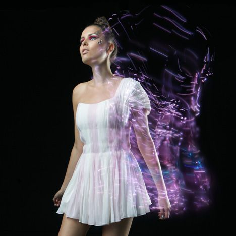
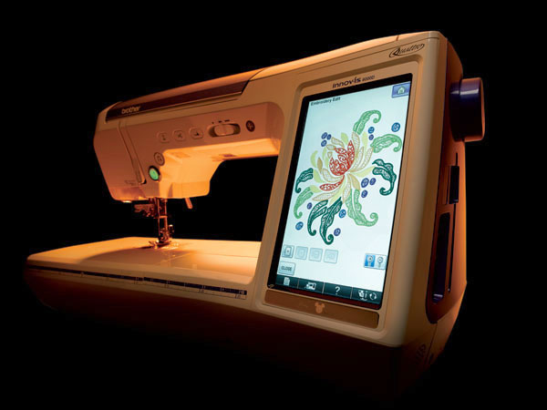
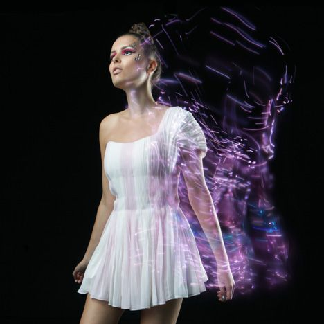
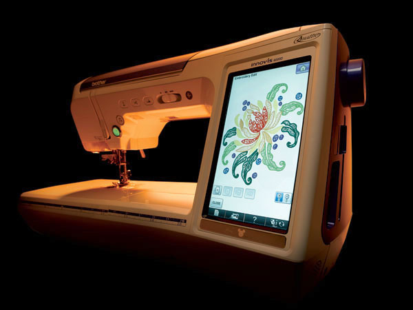

The future of sewing machines lies in the hands of designers who are working on inventive ideas for the near future. Brother International has created a design in which images become beautiful embroidered pieces. You sketch it, you dream it, you see it, it can all be placed on the 4.5” by 7” HD LCD screen. Germany has also got a hold of the futuristic sewing machine designs by creating a machine that creates the appropriate colored thread for the garment being created. It does so by using a camera to catch the color that is desired, it then uses quick drying ink to create the designated color. The future holds many different useful and innovative designs. The new and improved designs surpass the basic sewing technique created by Howe and Singer and takes the idea of at home sewing to another level. A level that will also take the fashion world and industry to a point of futurism, which includes higher performing machines that may even be able to embed technology into all garments.